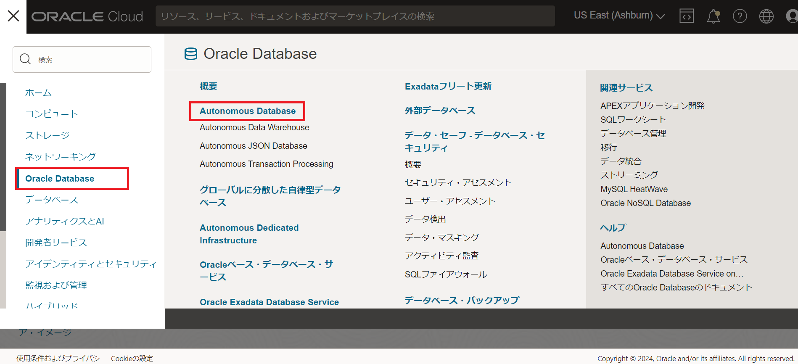
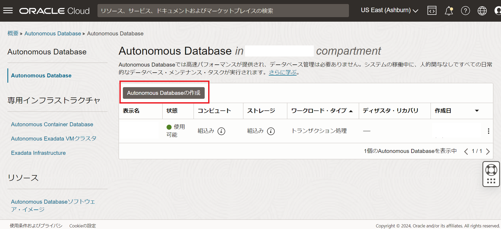
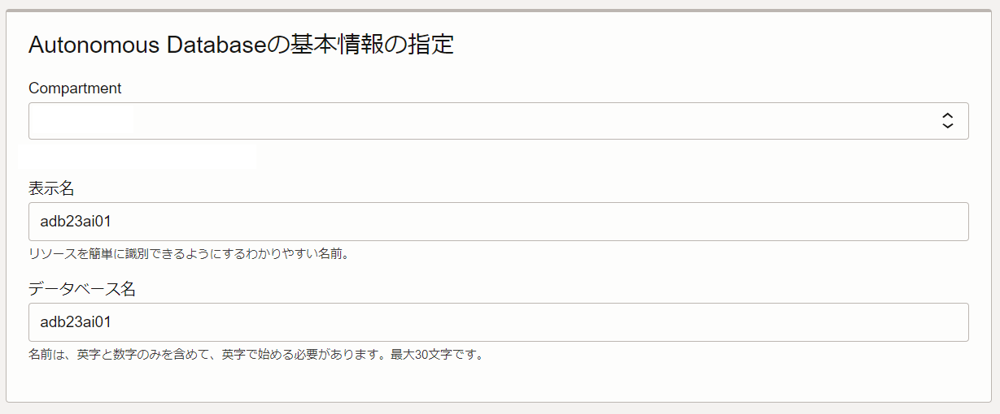
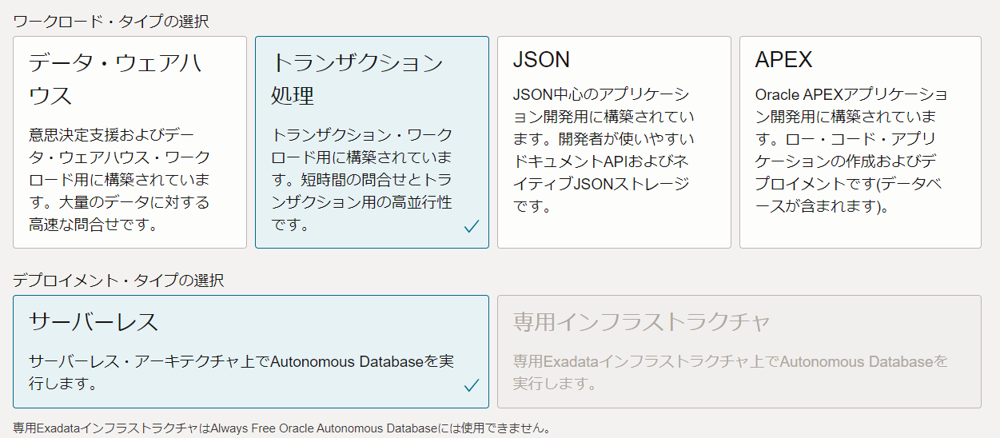
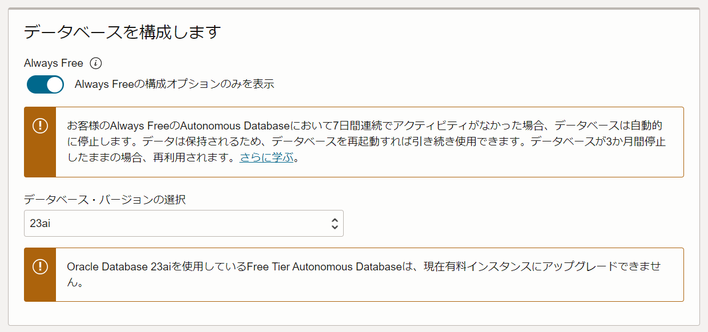
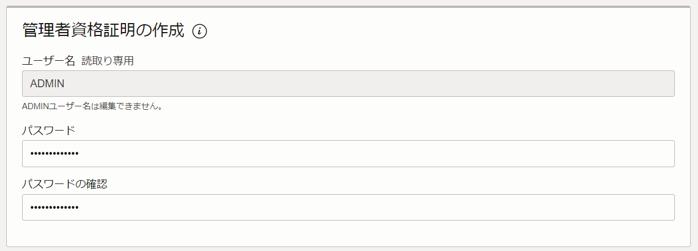
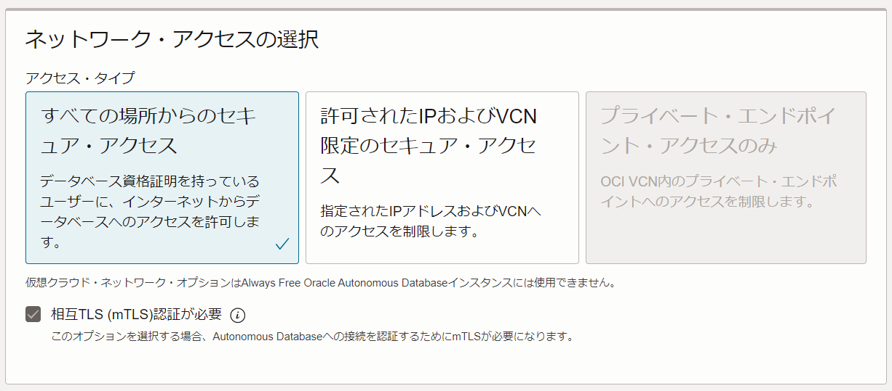
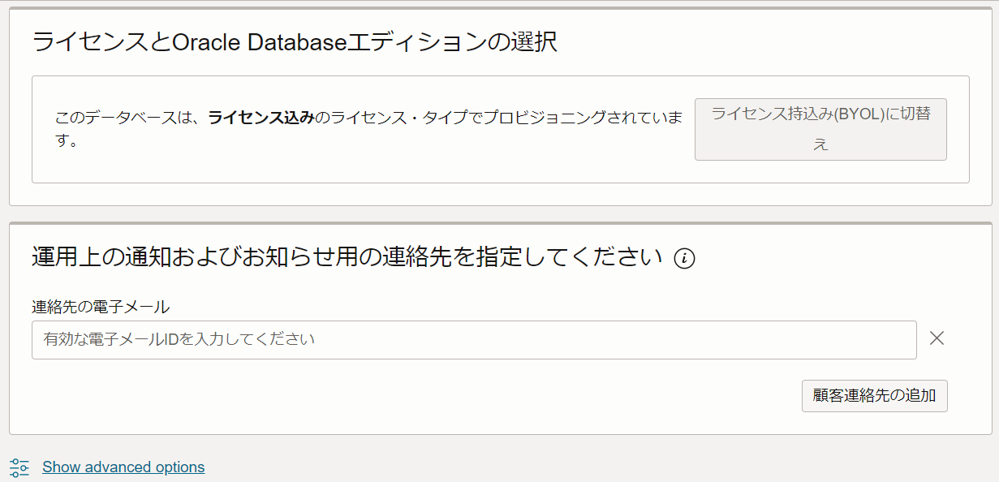
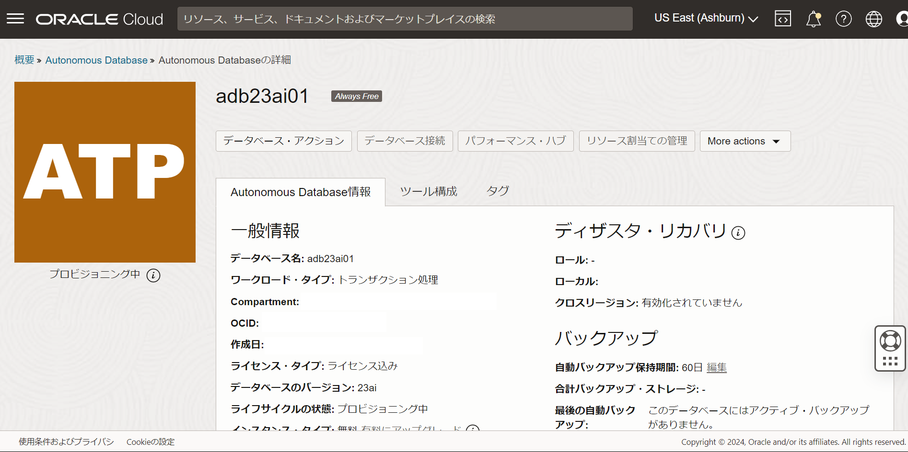

はじめに
Always Freeクラウド・サービスは、期間の制限なく無料で使用できるサービスです。
Always Freeではコンピュート、ストレージ、ロード・バランサ、そしてAutonomous Database (ADB) 等を使用可能です。
Always FreeのADBでは、2024年5月にリリースとなったOracle Database 23aiを使用し、新機能を試す事が出来ます。
この章では、Always FreeのADBインスタンスの作成方法をご紹介します。
なお、BaseDBでのインスタンスの作成方法は101: Oracle Cloud で Oracle Database を使おう(BaseDB) を参考にしてください。
目次
所要時間 : 約5分
1. リージョンの確認
Always Free Autonomous Database上でのOracle Database 23aiは、
現時点では、以下の4リージョンのみでご利用いただけます：
- Tokyo
- Ashburn
- Phoenix
- Paris
- London
お使いのテナンシーのホーム・リージョンが上記のリージョンのいずれか、
かつ、ホーム・リージョンでADBのインスタンスを作成する必要があります。
【補足】
ホーム・リージョンの確認方法は、その1 - OCIコンソールにアクセスして基本を理解するの 6. リージョンの確認を参考にして下さい。
2. ADBインスタンスを作成してみよう
-
ナビゲーション・メニューから、「Oracle Database」»「Autonomous Database」 を選択し、ADBのサービス画面を表示します。

-
Autonomous Database の作成 をクリックすると作成ウィンドウが立ち上がります。

-
立ち上がった Autonomous Database の作成 ウィンドウの入力欄に、以下の項目を入力します。
- コンパートメント - 任意（有効な管理権限を持つコンパートメントを選択して下さい）。
- 表示名 - 任意（以降では adb23ai01 として記載しています）。サービスメニュー画面での表示用です。
- データベース名 - 任意（以降では adb23ai01 として記載しています）。インスタンスへの接続時に利用します。

- ワークロード・タイプの選択 - トランザクション処理
【補足】
- システムが分析用途であればデータ・ウェアハウス（ADW）を選択
- JSON 中心のアプリケーション開発にはJSONを選択
- APEX アプリケーション開発にはAPEXを選択
- それ以外はトランザクション処理（ATP）を選択（本ハンズオンではこちらを選択ください。）
- デプロイメント・タイプの選択 - サーバーレス

- Always Free - Always Freeの構成オプションのみを表示をオン
- データベース・バージョンの選択 - 23ai

- Username - （固定値 / 変更不可）
【補足】 ADMINスキーマはインスタンスを管理するためのユーザーです。他のユーザーの作成等、さまざまな管理業務を実行できます。
- Password - Welcome12345#

- ネットワーク・アクセスの選択 - すべての場所からのセキュアアクセスを許可
【補足】
- アクセス制御ルールの構成にチェックを入れると、特定のIPレンジ、CIDR、VCNからのアクセスのみを許可するようホワイトリストを設定できます。今回はなしでOKです。
- ADBに接続する際に利用可能な認証方法は相互TLS接続とTLS接続の２種類があり、選択したアクセス・タイプにより利用可能な認証方法が次のように異なります：
アクセス・タイプ 相互TLS認証の要否 すべての場所からのセキュア・アクセス 必須
相互TLS認証のみ利用可許可されたIPおよびVCN限定のセキュア・アクセス 任意
相互TLS認証およびTLS認証から選択可プライベート・エンドポイント・アクセスのみ

- ライセンスタイプの選択 - ライセンス込み
【補足】
- ライセンス持込み（BYOL)： すでにお持ちのDBライセンスをCloudに持ち込んで利用する場合に選択します(Bring Your Own License)。有効なDBライセンスをお持ちでなくこちらのタイプを選択するとライセンス違反となりますのでご注意ください。
- ライセンス込み： DBソフトウェアの利用料やサポート費用を含め全てサブスクリプション形式で利用する場合に選択します。
- 通知およびお知らせ用の連絡先 - 任意（通知やお知らせ用の連絡先）。

-
全て入力できたことを確認し、Autonomous Databaseの作成 をクリックします。
（インスタンス作成が完了すると、茶色のプロビジョニング中から緑色の使用可能に変わります。緑色になればOKです！）
【補足】 ADBへの接続方法については104: クレデンシャル・ウォレットを利用して接続してみようを参考にして下さい。
以上で、この章は終了です。
次の章にお進みください。